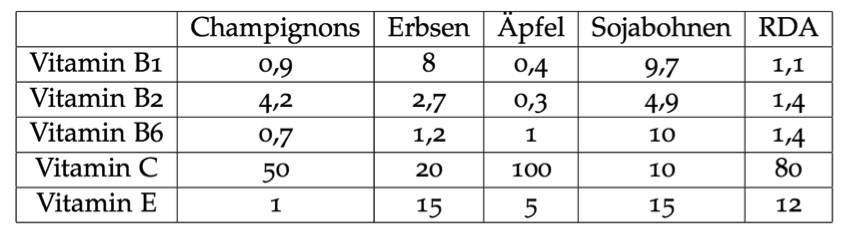
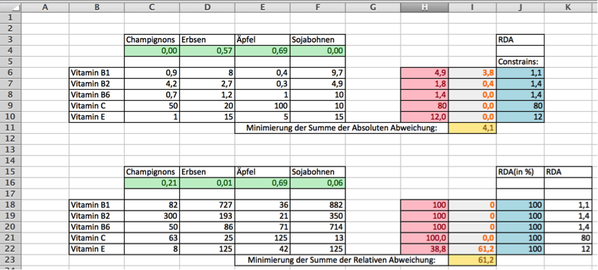
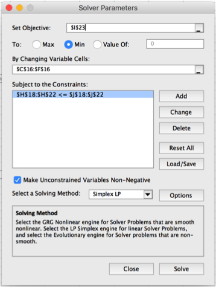

• In der folgenden Tabelle ist der Inhalt ausgewählter Vitamine in Milligramm pro Kilogramm in einigen Lebensmittel (Quelle: http://www.vitamine.com) und die empfohlene Tagesdosis für die Vitamine dargestellt (Quelle: de.wikipedia.org/wiki/Recommended_Daily_Allowance.)

1. Wenn die empfohlene Tagesdosis möglichst gut nur durch diese vier Lebens-mittel abgedeckt werden soll, wie viel von welchem Lebensmittel sollte man dann zu sich nehmen? Modellieren Sie dazu ein Optimierungsproblem bei dem die summierte absolute Abweichung der konsumierten Milligramm an Vitami- nen zu der empfohlenen Dosis minimiert werden soll! Linearisieren Sie dieses Optimierungsproblem falls notwendig und lösen Sie es (z.B. in Excel Solver)!
2. Da sich die Großenverhältnisse bei den verschiedenen Vitaminen stark variieren(Vitamin C wird viel mehr gebraucht und auch konsumiert!) ist es sinnvoll, die relative Abweichung zur empfohlenen Tagesdosis zu betrachten. Adaptieren Sie Ihr Optimierungsproblem, sodass die summierte relative Abweichung (in Pro-zent) der konsumierten Milligramm an Vitaminen zu der empfohlenen Dosisminimiert werden soll! Linearisieren Sie dieses Optimierungsproblem falls not-wendig und lösen Sie es!
Wir haben diese Aufgabe mittel Excel Solver gelöst. Im folgenden Abschnitt wird erkärt wie wir dabei vorgegangen sind. 

1. Für das erste Beispiel:
Zuerst haben wir die Tabelle in der Vitamine in Excel übernommen.
Anschließend haben wir die im Excel Sheet Grün markierten Entscheidungsvariablen eingefügt. Als nächstes haben wir dann mit dem =SUMPRODUCT($C$4:$F$4;C6:F6) die Roten Felder Ausgerechnet welche in unserem Fall die Linke Einschränkung darstellt. Danach haben wir die Grauhinterlegten Orangen Zahlen aus gerechnet indem wir die Linke Einschränkung minus die Rechte Einschränkung(Blauhinterlegte Zellen) berechnet haben. Diese Orangen Zahlen werden dann in der Gelben Zelle Zusammengerechnet welche unser Zielfunktion ist. Diese soll minimiert werden mittels Simplex. Hierfür öffnen wir dann unter Data den Excel Solver.
Bei dem Punkt Set Objective muss man die Zell mit der Zielfunktion angeben, anschließen muss man auswählen ob man die Maximieren oder Minimieren will. In dem Feld By Changing Variable Cells: gibt man die Grünen Entscheidungsvariablen an. Subject to the Constrains gibt man dann mit dem Button Add die Einschränkungen an und deren Beziehung Größer Gleicher /Kleiner Gleicher. Dann wählt man in Select a Solving Methode Simplex Lp an. Anschließend drückt man auf Solve nach ein paar Sekunden kriegt man dann die Lösung in dem die Entscheidungsvariablen angepasst worden sind.
2. Für das zweite Beispiel: Funktioniert alles Gleich man muss nur die entsprechenden Zeilen auswählen beim berechnen der Einschränkungen sowie bei der Auswahl der Parameter beim Solver. In diesem Teil hat sich nur geändert das wir die Daten umgerechnet haben in der Relative Abweichung von der RDA. Die Blauen Zellen enthalten immer 100% da dies die RDA ist. Die Vitamine wurden als Relative Werte zu der RDA ausgedrückt d.h. wie viel % der RDA decken sie ab. Anschließend wir dann im Roten Feld die =SUMPRODUCT($C$16:$F$16;C18:F18) berechnet. Als letztes wir dann die Zielfunktion so berechnet das man jeweils die Summe der Differenzen der Einzelne Vitamine zu ihrer RDA nimmt.